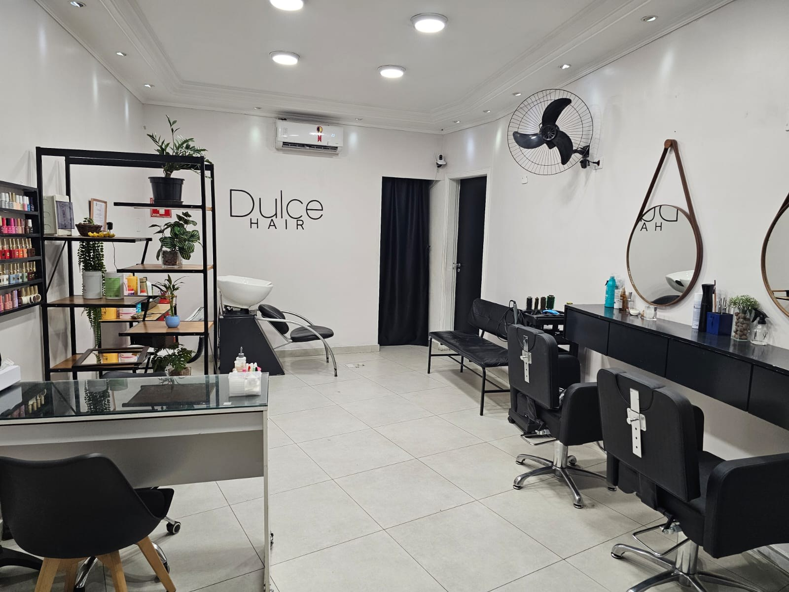
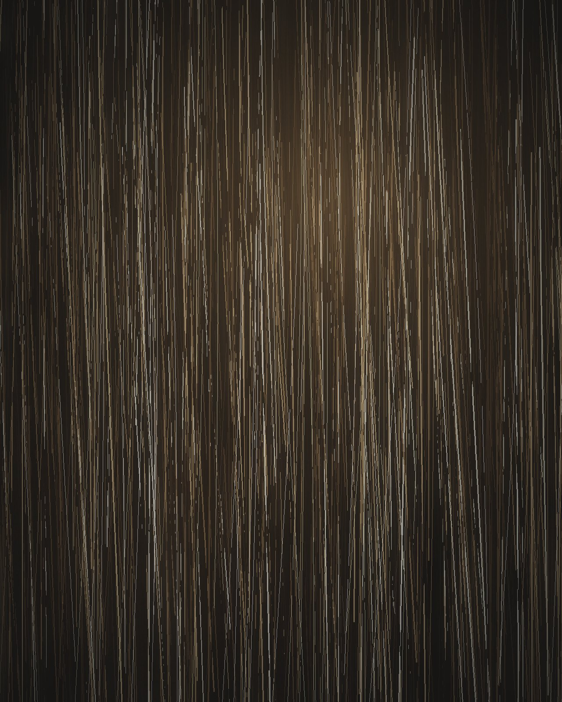
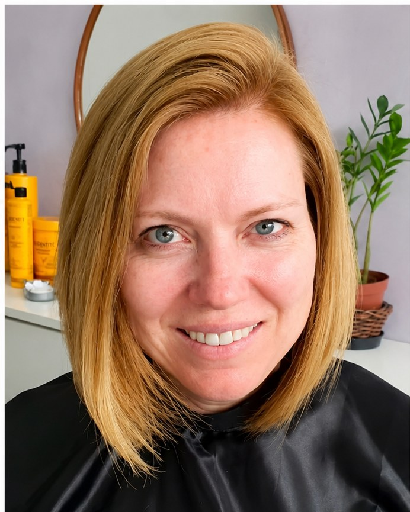
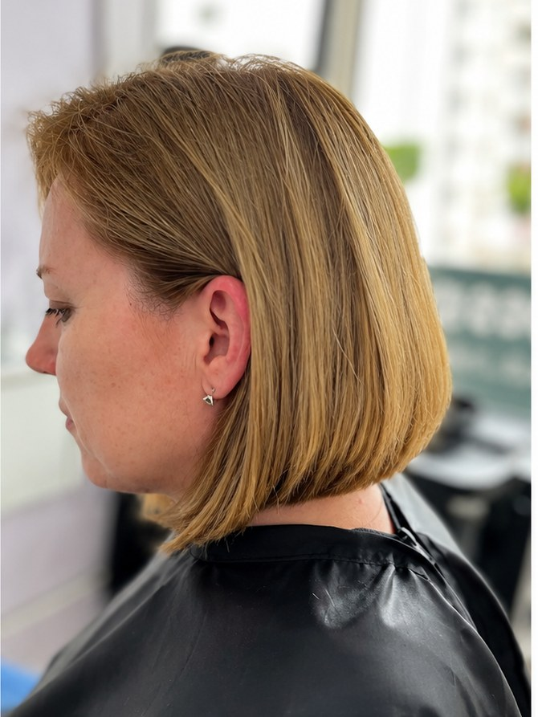
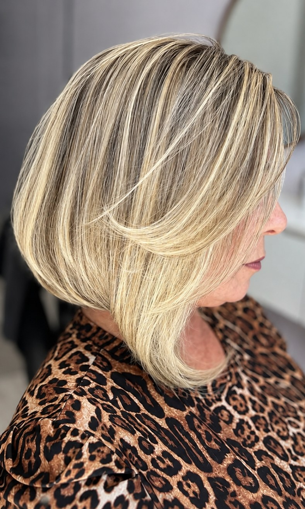
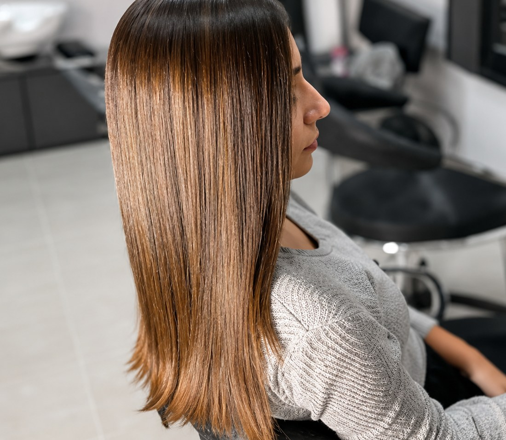
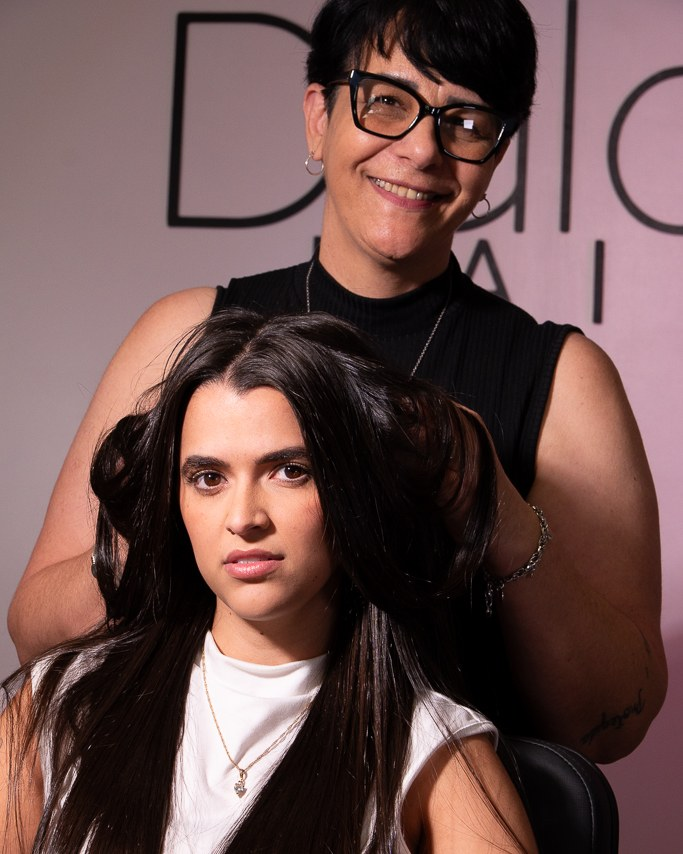

Progressiva sem formol
Alinhamento e redução de volume com ativos registrados na Anvisa, sem o cheiro que arde os olhos. Teste de mecha antes e efeito ajustado ao que você quer.
Especialidade
Progressiva sem formol · Corte · São Paulo
Progressiva sem formol, sem cheiro que arde os olhos e sem fio quebradiço depois. E corte desenhado para o seu rosto e para a sua rotina. Duas coisas que a Dulce Hair faz melhor do que qualquer outra.

Progressiva sem formol
Formol alisa hoje e cobra depois: cheiro que impregna, olho ardendo, couro cabeludo irritado e fio quebrando em seis meses. Aqui o alisamento é feito com ativos sem formol, com registro na Anvisa, e só depois do teste de mecha no seu cabelo.
Progressiva com formol
Na Dulce Hair, sem formol
Indicada para

Corte assinatura
Quase toda mulher que chega aqui traz a mesma história. E quase sempre o problema não foi a tesoura, e sim a conversa que não aconteceu antes dela.
Aqui a tesoura só encosta no seu cabelo depois que a gente entende o que você faz com ele todo dia.
O que fazemos
Cada serviço começa com diagnóstico do fio e termina com orientação de manutenção, para o resultado durar até o próximo horário.
Alinhamento e redução de volume com ativos registrados na Anvisa, sem o cheiro que arde os olhos. Teste de mecha antes e efeito ajustado ao que você quer.
EspecialidadeVisagismo aplicado de verdade: formato do rosto, textura do fio, densidade e o tempo que você tem de manhã. O corte é desenhado, não copiado.
EspecialidadeCronograma capilar montado a partir do diagnóstico: hidratação, nutrição, reconstrução e selagem. Para quem quer parar de cortar o dano.
Cor pensada para a sua pele e para a raiz que vai crescer. Fórmula ajustada fio a fio, com transição confortável entre as manutenções.
Esmaltação em gel, alongamento e manutenção, com cutilagem caprichada e acabamento que aguenta a semana inteira. Dá para fazer junto com o cabelo, no mesmo horário.
Modelagem para o dia a dia ou para a noite que importa. E o principal: a gente te ensina a repetir aquilo em casa, com o que você já tem.
Como funciona
Conversa e leitura do fio: formato do rosto, densidade, histórico de química e quanto tempo você realmente tem de manhã.
Antes de qualquer alisamento, testamos uma mecha escondida. É ali que se descobre como o seu cabelo responde, e não no meio da aplicação.
Técnica precisa, produto profissional e uma cliente por vez. Sem correria, sem improviso e sem hora estourada.
Finalização, orientação de rotina em casa e o intervalo ideal de retorno para o resultado não se perder.
Resultados
Cortes, cores e tratamentos feitos na cadeira da Dulce Hair.



A experiência
São +7 anos de tesoura na mão e uma cliente por vez. A Dulce Hair não é salão de esteira: a agenda é fechada por horário para que o seu atendimento tenha o tempo que ele precisa, nem um minuto a menos.
Você chega e é atendida. Sem sala de espera lotada.
Teste de mecha e leitura do fio. Nada é aplicado no escuro.
Linhas premium do lavatório à finalização. Sem substituição barata.
Quem te atendeu conhece seu histórico na visita seguinte.

Quem já sentou na cadeira
“Profissional excelente, atende as clientes com respeito e carinho, o serviço é impecável. Indico o salão com total segurança.”
“A melhor cabeleireira da região. Além de talentosa, se tornou uma grande amiga. Dulce Hair é certeza de atendimento excelente com produtos de qualidade e o precinho que a gente gosta.”
“Meninas maravilhosas, atendimento personalizado...super recomendo ❤️”
Avaliações publicadas no Perfil da Empresa da Dulce Hair no Google.
Agenda limitada
Chame no WhatsApp, conte se é progressiva, corte ou os dois, e a gente já te passa os horários livres desta semana. Resposta rápida, sem compromisso.
Atendimento por WhatsApp · Terça a sábado, 09h às 18hOnde estamos
Estr. do M'Boi Mirim, 2207 · Jardim das Flores
São Paulo/SP · CEP 04905-022
Terça a sábado · 09h às 18h
Dulce Hair
Estr. do M'Boi Mirim, 2207
Jardim das Flores · São Paulo/SP
4,8 · 29 avaliações no Google
Dúvidas frequentes
Trabalhamos com hora marcada para dedicar o tempo certo a cada cliente. Chame no WhatsApp e a gente te passa os horários livres. Normalmente há vaga na mesma semana.
Progressiva, corte e cor variam conforme comprimento, densidade e histórico do fio. Cobrar um valor fixo seria cobrar errado de alguém. Mande uma foto do seu cabelo no WhatsApp e você recebe o orçamento fechado antes de vir.
Alisa, sim. O que muda é o caminho. Sem formol o resultado é construído com ativos que alinham e selam a cutícula, e o efeito é ajustável: dá para deixar liso total ou só reduzir volume e frizz, mantendo o movimento. Na consulta a gente combina qual dos dois você quer, e o teste de mecha mostra até onde o seu fio chega.
Até 3 meses. Depende muito do tipo de fio, da frequência de lavagem e dos produtos que você usa em casa. Por isso a orientação de manutenção faz parte do atendimento. Shampoo sem sulfato prolonga bastante o resultado.
Na maioria dos casos sim, mas é exatamente por isso que existe o teste de mecha. Cabelo com descoloração ou com alisamento antigo exige avaliação de elasticidade e, às vezes, um cronograma de reconstrução antes. Se o seu cabelo não estiver em condição, a gente fala isso antes, não depois do estrago.
Nesse caso a gente pede que você converse com o seu médico primeiro. Mesmo sem formol, quem decide sobre química durante a gestação e a amamentação é quem acompanha a sua saúde, e sem essa liberação a gente não aplica. Enquanto isso, corte e tratamento seguem liberados normalmente.
Corte com finalização leva cerca de 1h a 1h30. A progressiva costuma levar de 2h a 4h, conforme o comprimento e a densidade do cabelo. Você recebe a estimativa junto com o orçamento, para se organizar.
Pix, dinheiro, débito e cartão de crédito. As condições de parcelamento a gente combina no atendimento.
É justamente para isso que existe o diagnóstico: nada começa antes de você entender e aprovar o que vai ser feito. E se algum ajuste for necessário depois, é só falar. A gente resolve.
Último passo
Conte o que você quer fazer e mande uma foto do seu cabelo. Você recebe orçamento, tempo de atendimento e os horários livres, tudo antes de sair de casa.
Resposta em poucos minutos no horário comercial